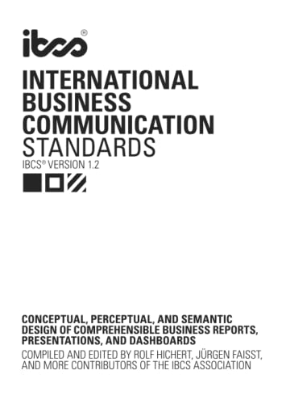

International Business Communication Standards
Rolf Hichert, Jürgen Faisst and the IBCS Association, version 1.2
My first reference for reports and slides, and the source of the story rules on this site: every heading states its message, and one word and one colour keep one meaning throughout.